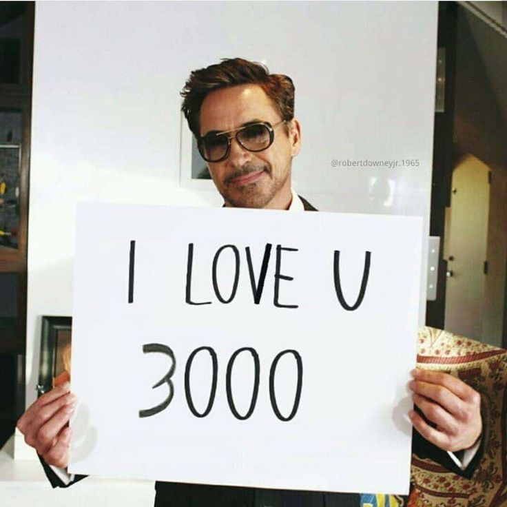

Hello my love, Merve ♡
I have been worrying about you in the last few days, even Luca and
Besmala noticed that you were unusually absent in the last few days,
And, that is totally fine! Do, what you want and need to do, this is
not ment to judge you, or even making you feel bad, rather the opposit.
I want to assure you, that you are not alone, that we care about you,
and that we love you.
I am not sure what you are tinking or feeling lately, I do have my
thoughts, but I won´t imagine something that isn´t reflecting your true feelings.
So, in any case, having trouble with something, exam stress or that
we - I - made you feel bad (e.g that I didn´t went to the library
spontaneously), I am sorry and I am always gonna be avaible for you,
I am proud of you!
If nothing is wrong, or you just do not feel like socialazing, that is
totally fine - even better, but eitherways you can count this as a form
of generall praising, or assurance that, doesn´t matter what, I will,
and I am, proud of you, that I love you and that you are not alone!
If you need totalk about anything, i am here for you, text or call
me at any given time, and if I made you feel bad, do not miss the
chance to tell me, because it is never my intention and I want you
feel safe with me.
I won´t sweet talk you to death, so Imma quit right here, just know
that I did this to not pressure you, if you do not feel like
communicating, so you do not need to answer this, I am happy
that you even read this.
I hope, after the exam - not necessarily because of them -
you feel great and love.
(And, if you still want to, we need to play Volleyball afterwards)
Sincerely Aiden, your a bit social incompeten friend that didn´t
know how to contact you with this, while making sure you feel safe ♡
PS: My mother is possibly getting a cat, expect many pics .D
♡ ♡ ♡ Love youuuuu ♡ ♡ ♡
A playlist, to help you find comfort or to just relax
